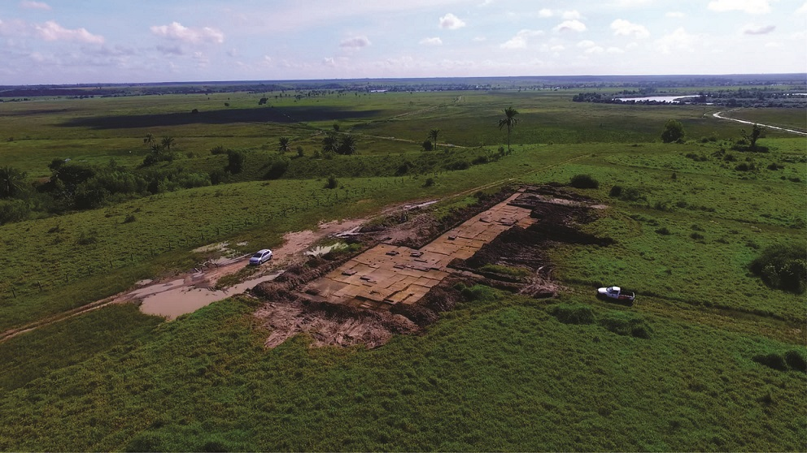
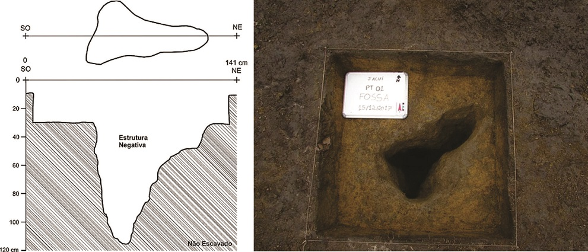
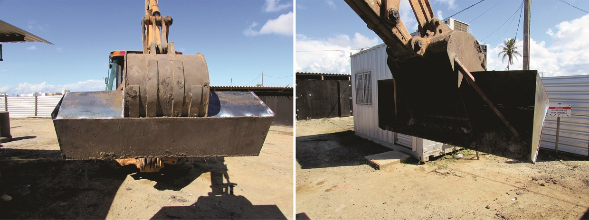
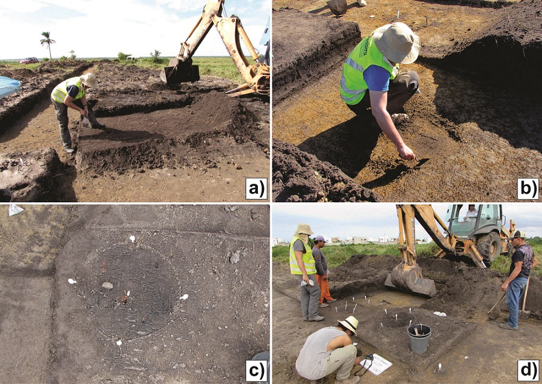
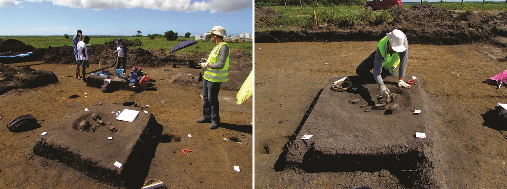
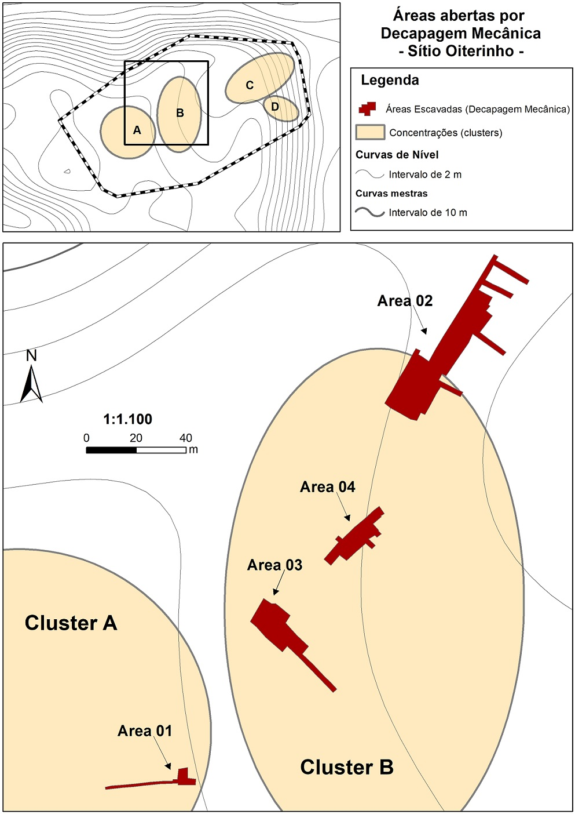
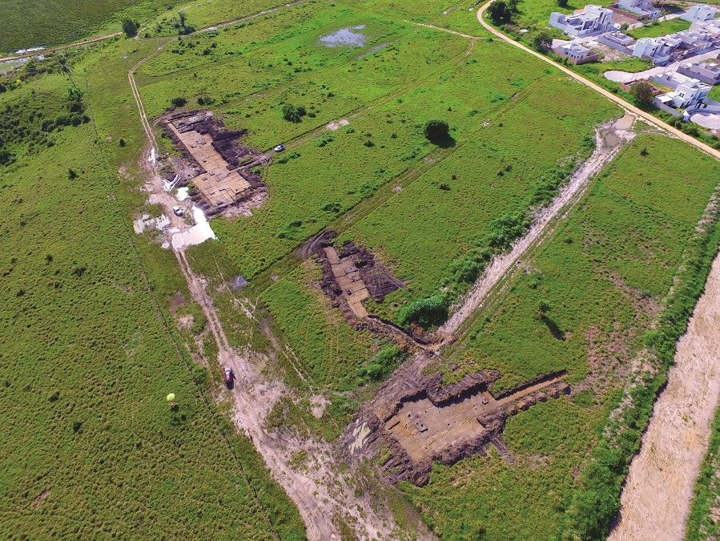
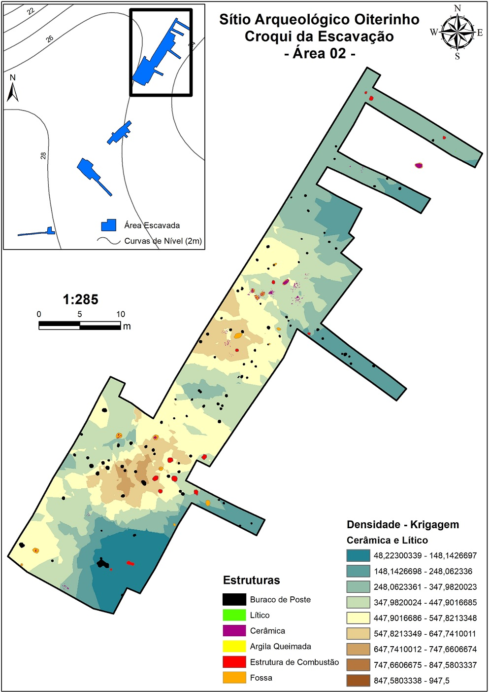
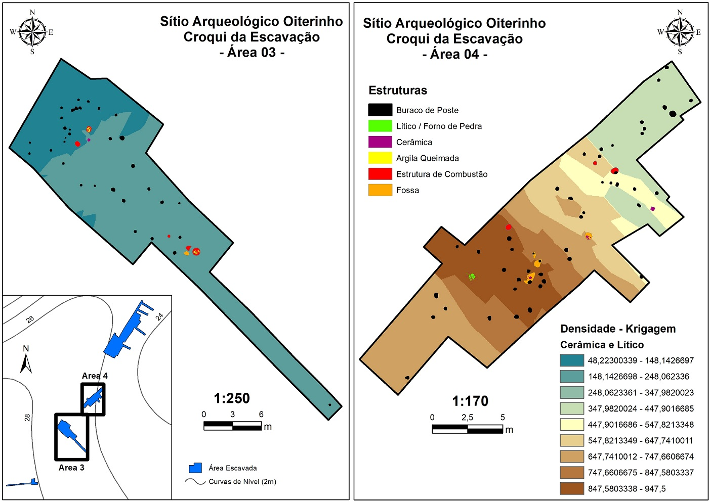

Sobre o projeto de Pesquisa no sítio Oiterinho
A maior parte do texto abaixo foi estraído do artigo publicado em 2023 na Revista de Arqueologia da SAB (BARRETO & PEREIRA, 2023).
O Projeto de Pesquisa no Sítio Oiterinho
O sítio Oiterinho estava situado em um platô plano na margem direita do Rio São Mateus (ou Cricaré), no município de São Mateus, estado do Espírito Santo. Sua localização, em termos geomorfológicos, encontra-se exatamente na transição do terciário para o quaternário, sendo aquele o último platô de uma cadeia de tabuleiros que surge no interior e é interrompida por uma planície que segue até a costa. A margem do rio Cricaré é composta por uma planície aluvial extensa, onde pode-se ter fácil acesso à água (Figura 1). No local estava prevista a instalação de um empreendimento residencial de aproximadamente 50 hectares e, portanto, a pesquisa foi realizada no âmbito da arqueologia preventiva.

O sítio já havia sido registrado junto ao Instituto do Patrimônio Histórico e Artístico Nacional (IPHAN). No entanto, seus limites não eram conhecidos e foi necessário realizar uma prospecção prévia a fim de orientar as estratégias de escavação para o resgate arqueológico. Durante a etapa do Programa de Avalaiação de Impacto ao Patrimônio Arqueológico (PAIPA2), foi possível perceber que o contexto arqueológico encontrado na área do empreendimento era de alta densidade de artefatos, com presença de estruturas negativas (feições) que seguiam para o substrato geológico. Em um dos poços-teste abertos foi identificada uma estrutura de deposição cerâmica quebrada in situ, arranjada sobre a abertura de uma fossa. No centro da deposição, havia uma mancha escura com apenas alguns fragmentos cerâmicos erodidos, que após ser escavada demonstrou ser uma feição de quase 120 cm de profundidade (Figura 2).

Tais estruturas são geradas pelas atividades cotidianas desempenhadas no assentamento e podem representar funções variadas, como descarte ou deposição de cerâmicas em fossas e a abertura de buracos para fixar postes de sustentação das casas. A evidência deste tipo de estrutura demonstra a presença de vestígios característicos de habitações indígenas, o que torna este sítio especial pois assiná-la a possibilidade de estudarmos o assentamento com ênfase na compreensão das unidades domésticas.
Com os dados obtidos a partir das atividades de pesquisa realizadas em 2017, no âmbito do PAIPA, foi elaborado um Programa de Gestão do Patrimônio Arqueológico (PGPA4), com o objetivo de realizar o resgate do sítio Oiterinho. O PGPA foi executado no ano de 2018.
Métodos de escavação por Decapagem Mecânica
Antes das escavações com maquinário, foi efetuada a abertura de seis unidades de 1x1 m distribuídas ao longo da área do sítio. Esses poços-teste forneceram informações relevantes sobre a estratigrafia do sítio e a distribuição dos vestígios em cada nível artificial de 10 cm.
Após termos uma noção da estratigrafia do sítio em diferentes pontos, a escavação por decapagem mecãnica foi realizada com a abertura de áreas muito amplas que alcançaram 1418 m². Para isso, a concha da máquina foi equipada com uma chapa lisa soldada à mesma para neutralizar a ação dos dentes do equipamento, o que resulta no maior controle das decapagens de modo a efetuar retiradas uniformes na camada arqueológica, através da raspagem do solo. Para otimizar sua execução operacional, a lâmina de metal soldada à concha da máquina ultrapassava as dimensões desta última, alcançando 1,90 m de largura por 41 cm de altura. Nas laterais e na parte superior, outras três chapas foram soldadas para formar uma nova concha lisa e evitar que o solo escapasse a cada retirada, prejudicando assim a visibilidade das feições (Figura 3).

De modo a evidenciar a ocorrência e distribuição espacial desses vestígios, a escavação por decapagem mecânica retirou gradativamente o sedimento antrópico até o topo das estruturas negativas, ou até encontrar alguma deposição cerâmica na camada antropogênica de solo escuro. Com isto, o sedimento arqueológico foi raspado pela concha lisa em camadas de 2 a 8 cm de espessura, sempre com o acompanhamento do arqueólogo, que observava o solo para identificar estruturas arqueológicas e feições na interface entre a camada antrópica e o latossolo, assim como deposições cerâmicas situadas no próprio nível da camada antropogênica.
Nesse tipo de escavação, não utilizamos a delimitação de uma malha de quadrículas para escavação e registro espacial dos vestígios. O material arqueológico fragmentado na camada escavada com máquina foi coletado de acordo com a sua localização em cada trincheira aberta com a pá mecânica, cujo nome adotado para referência foi o termo “Unidade de Coleta”. Todas as peças foram referenciadas às Unidades de Coleta (UC) onde foram encontradas, identificadas nos sacos de acordo com sua proveniência.
Cada UC recebe uma numeração sequencial e suas dimensões correspondem à largura da lâmina lisa e o alcance máximo do braço da máquina para realizar as raspagens (2 m x 3,5 m). A cada decapagem da máquina, o arqueólogo verifica a presença/ausência de estruturas e coleta todo o material arqueológico (Figura 4a). Para assegurar as informações espaciais de cada UC, foram colocados piquetes identificadores, posteriormente registrados com a estação total, assim como foi feito com as estruturas escavadas manualmente. À medida que a decapagem mecânica vai retirando o solo antrópico, a atenção para a evidência de estruturas e feições é redobrada. O arqueólogo acompanha cada movimento da máquina, fazendo também raspagens manuais com a colher ou enxada, a fim de ter maior controle e nitidez na delimitação das feições (Figura 4b).

Na maioria das vezes, as manchas estratigráficas que representam os buracos de poste e fossas só foram visíveis na interface com o latossolo. Em outras ocasiões, as estruturas negativas já eram perceptíveis em meio ao solo escuro antropizado, o que acontece especialmente no caso de fogueiras, onde a presença de carvão concentrado em maior quantidade dá um aspecto mais escuro do que o seu entorno (Figura 4c).
Ao identificar uma possível estrutura arqueológica, a escavação por decapagem mecânica foi imediatamente interrompida para escavação manual dos vestígios com instrumentos leves, em níveis artificiais. As estruturas identificadas foram inicialmente demarcadas com uma colher descartável branca fincada no centro da mancha estratigráfica, para ser posteriormente escavada conforme demandado. Nesse esquema metodológico, é fundamental que a equipe esteja organizada em duas frentes de trabalho. Uma primeira é composta pelo arqueólogo coordenador, que acompanha integralmente o maquinário com a ajuda de auxiliares de campo para fazer a limpeza. A segunda frente é composta por arqueólogos que desenvolvem as escavações manuais das estruturas identificadas, sempre em níveis naturais (Figura 4d).
Para as deposições cerâmicas que estavam situadas totalmente na camada antropogênica de terra escura, foram deixados blocos como testemunhos para serem escavados posteriormente (Figura 5).

Cada estrutura identificada foi registrada em fichas específicas. Durante sua escavação, foi feita a coleta de carvão e sedimento associado ao material arqueológico, enquanto outras informações são registradas em detalhe (como o desenho de perfil e descrições gerais). O registro foi feito através de desenhos de perfil, fotografias e descrições das estruturas em fichas individuais. No final das escavações, a localização espacial de cada uma destas ocorrências antrópicas foi registrada em coordenadas x/y/z com a estação total, a fim de gerar um croqui com a distribuição espacial de todas as estruturas no assentamento.
Para registrar as coordenadas UTM de cada estrutura, foram definidos dois pontos de referência representados por piquetes fincados no solo em cada lado da estrutura, orientados na direção dos pontos cardinais. A distância entre os piquetes foi anotada tanto nos desenhos de perfil e plano de topo feitos em papel milimetrado, quanto na ficha individual de descrição. A fotografia da vista de topo foi feita após o desenho, na qual ambos os piquetes estavam visíveis para possibilitar o georreferenciamento de cada estrutura com fins de reconstituir a planta baixa do sítio.
Com base nesta ampla gama de dados contextuais, onde a localização de cada estrutura é sistematicamente registrada, a escavação com maquinário possibilitou a compreensão do sítio arqueológico do ponto de vista da organização espacial do assentamento, numa abordagem que combinou informações de um variado leque de vestígios. Este viés nos permite discutir tanto o cotidiano (áreas de atividade) das populações que ocuparam o assentamento, quanto as possíveis mudanças culturais que podem ter ocorrido ao longo do tempo (com o suporte de datações radiocarbônicas).
O resultado final da etapa de campo no sítio Oiterinho é apresentado no vídeo abaixo:
As áreas de Escavação
As áreas prioritárias de escavação foram definidas a partir de uma modelagem espacial feita com os dados da prospecção durante a etapa do PAIPA.

No total, foram abertas quatro áreas amostrais com o emprego de maquinário pesado, cuja soma totalizou 1418,22 m² (Figura 6, Tabela 1).
| Área Amostral |
Abrangência |
Quantidade de Estruturas |
|---|---|---|
| Área 01 |
67,36 m² |
0 |
| Área 02 |
868,49 m² |
141 |
| Área 03 |
286, 20 m² |
42 |
| Área 04 |
196, 17 m² |
50 |
| Total |
1418,22 m² |
233 |
Das quatro áreas amostrais, a Área 2 foi a de maior abrangência, alcançando 868,22 m² (Figura 7), enquanto as demais não passaram de 300 m². Das quatro áreas escavadas, a que possibilitou ter maiores informações sobre as casas foi a Área 2, devido à grande quantidade de buracos de poste, além de fogueiras, deposições de vasilhas e estruturas com cerâmicas quebradas in situ.

A seguir, apresentamos um breve resumo de cada uma das áreas abertas com decapagem mecânica.
Área 1
A Área 1, de quase 68m², não apresentou nenhuma estrutura negativa, mas apenas fragmentos cerâmicos dispersos na camada antropogênica. Esta área foi escavada com o intuito de fazer um primeiro teste da Decapagem Mecãnica no sítio, bem como alinhar os objetivos do trabalho com as habilidades do operador do maquinário.
Área 2
Das quatro áreas amostrais, a Área 2 foi a de maior abrangência, alcançando 868,22 m².
Das quatro áreas escavadas, a que possibilitou ter maiores informações sobre a localização das casas foi a Área 2, devido à sua maior extensão (868,22 m²) ter permitido evidenciar uma grande quantidade de buracos de poste, além de fogueiras, deposições de vasilhas e estruturas com cerâmicas quebradas in situ.
Pelo que foi possível constatar pelo croqui disposto na Figura 8, a Área 2 trata-se de uma parte do sítio com espaços específicos compostos por concentrações de fogueiras ao sul e concentrações de deposições cerâmicas ao norte. As fogueiras estão situadas no limite dos alinhamentos de buracos de poste com uma área mais limpa que parece ser uma praça situada entre as unidades domésticas, onde os buracos de poste praticamente desaparecem e a quantidade de outras estruturas diminui consideravelmente. Já ao norte, parece haver um padrão de estruturas com cerâmicas quebradas (oriunda de diversas vasilhas) depositadas dentro de fossas, o que nos indica preliminarmente sua função como lixeiras para o descarte de cerâmica.

Também na porção norte da Área 2, apareceram duas deposições de vasilhas Aratu deitadas em fossa escavada no substrato. Esse padrão de deposição é muito distinto de outros sítios Aratu conhecidos, onde geralmente as vasilhas são depositadas em pé, porém também em fossas escavadas no substrato. Esse fato nos chama atenção para a necessidade de destacar os contextos de deposição como formas de variabilidade, tendo em vista que em muitos casos a atenção tem sido dada essencialmente para as tipologias cerâmicas.
Área 3
Na Área 3 havia uma menor densidade de artefatos na camada de ocupação (Figura 9). Foram identificadas seis fogueiras e uma deposição cerâmica composta por uma vasilha piriforme de pequenas dimensões, depositada de forma alinhada com duas fogueiras laterais. A disposição de buracos de poste não apresenta um padrão evidente, mas que com a ampliação do estudo pode gerar um dado importante para pensarmos a espacialidade do assentamento, especialmente com a análise das estruturas a partir da vetorização de cada feição em uma planta baixa.

Área 4
A Área 4 (Figura 9) evidenciou uma alta densidade de artefatos na camada de ocupação, três fogueiras (uma dela composta por um aglomerado de lateritas), duas deposições cerâmicas (uma delas emborcada em um fundo de fossa), uma vasilha quebrada in situ e mais de quarenta buracos de poste. Na camada de terra preta foi coletada uma quantidade significativa de material lítico lascado, com suportes em pequenos seixos de quartzo hialino. O solo nesta área era muito mais escuro que nos demais locais escavados do sítio, o que pode indicar ser este um local de atividade doméstica muito recorrente, com uma possível oficina de lascamento.
Alguns resultados da pesquisa
Prêmio Luiz de Castro Faria do Iphan: Concedido em 2019, durante a 7ª Edição do Prêmio, na categoria de melhor artigo científico. Os resultados da pesquisa foram apresentados na sede do Iphan, em Brasília.
Publicação de Artigo Científico na Revista de Arqueologia: O artigo referente ao prêmio foi publicado em 2023 na Revista de Arqueologia da Sociedade de Arqueologia Brasileira (SAB), de Qualis A1.
Coordenação do Projeto
Dra. Daiane Pereira 
Coordenadora Geral do Projeto (Peabiru Consultoria Arqueológica)
Alumni Universidade Federal de Minas Gerais (PPGAN/UFMG)
daianepereira.dp@gmail.com;
MA Bruno Barreto
Coordenador de Campo do Projeto (Peabiru Consultoria Arqueológica)
Doutorando na Universidade de São Paulo (MAE/USP)
barretobrunosb@gmail.com;
Como citar este repositório?
Barreto, B. D. S., & Pereira, D. (2023). WebMap do sítio arqueológico Oiterinho, São Mateus/ES. (Version 1.0) [Computer software]. https://doi.org/10.5281/zenodo.10790334
Licença
Web Map do sítio arqueológico Oiterinho, São Mateus/ES by Bruno Barreto & Daiane Pereira is licensed under Attribution-NonCommercial-ShareAlike 4.0 International


Footnotes
BARRETO, Bruno & PEREIRA, Daiane. Onde estão as quadrículas? A decapagem mecânica e suas contribuições para o estudo de unidades domésticas no contexto da arqueologia preventiva. Revista de Arqueologia, v. 36, n. 1, 2023↩︎
PEREIRA, Daiane. Programa de Avaliação de Impacto ao Patrimônio Arqueológico nos empreemdimentos Jacuí II e Jacuí III, São Mateus/ES. Peabiru: Vitória, 2017.↩︎
BARRETO, Bruno & PEREIRA, Daiane. Onde estão as quadrículas? A decapagem mecânica e suas contribuições para o estudo de unidades domésticas no contexto da arqueologia preventiva. Revista de Arqueologia, v. 36, n. 1, 2023↩︎
PEREIRA, Daiane. & BARRETO, Bruno. Programa de Gestão do Patrimônio Arqueológico nos empreemdimentos Jacuí II e Jacuí III, São Mateus/ES. Peabiru: Vitória, 2018.↩︎
BARRETO, Bruno & PEREIRA, Daiane. Onde estão as quadrículas? A decapagem mecânica e suas contribuições para o estudo de unidades domésticas no contexto da arqueologia preventiva. Revista de Arqueologia, v. 36, n. 1, 2023↩︎
BARRETO, Bruno & PEREIRA, Daiane. Onde estão as quadrículas? A decapagem mecânica e suas contribuições para o estudo de unidades domésticas no contexto da arqueologia preventiva. Revista de Arqueologia, v. 36, n. 1, 2023↩︎
BARRETO, Bruno & PEREIRA, Daiane. Onde estão as quadrículas? A decapagem mecânica e suas contribuições para o estudo de unidades domésticas no contexto da arqueologia preventiva. Revista de Arqueologia, v. 36, n. 1, 2023↩︎
BARRETO, Bruno & PEREIRA, Daiane. Onde estão as quadrículas? A decapagem mecânica e suas contribuições para o estudo de unidades domésticas no contexto da arqueologia preventiva. Revista de Arqueologia, v. 36, n. 1, 2023↩︎
BARRETO, Bruno & PEREIRA, Daiane. Onde estão as quadrículas? A decapagem mecânica e suas contribuições para o estudo de unidades domésticas no contexto da arqueologia preventiva. Revista de Arqueologia, v. 36, n. 1, 2023↩︎
BARRETO, Bruno & PEREIRA, Daiane. Onde estão as quadrículas? A decapagem mecânica e suas contribuições para o estudo de unidades domésticas no contexto da arqueologia preventiva. Revista de Arqueologia, v. 36, n. 1, 2023↩︎
BARRETO, Bruno & PEREIRA, Daiane. Onde estão as quadrículas? A decapagem mecânica e suas contribuições para o estudo de unidades domésticas no contexto da arqueologia preventiva. Revista de Arqueologia, v. 36, n. 1, 2023↩︎